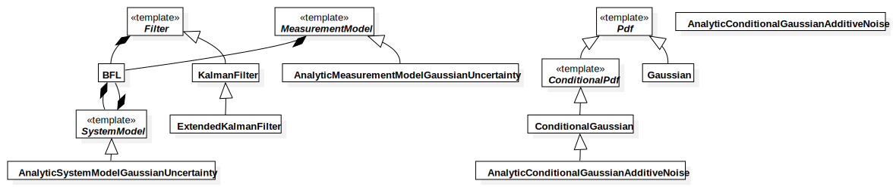

BFL
UMLPackage
«cpp_namespace»
Untitled
::
wholeBodyEstimator
::
«cpp_namespace»BFL
Description
none
Diagrams

Overview
Properties
Name
Value
name
BFL
stereotype
cpp_namespace
visibility
package
importedElements
Dependants
«cpp_namespace»yarpWholeBodySensors
Relationships
(yarpWholeBodySensors→BFL)
Owned Elements
BFL
«template»Filter
KalmanFilter
ExtendedKalmanFilter
AnalyticMeasurementModelGaussianUncertainty
AnalyticSystemModelGaussianUncertainty
«template»SystemModel
«template»MeasurementModel
AnalyticConditionalGaussianAdditiveNoise
ConditionalGaussian
«template»ConditionalPdf
«template»Pdf
AnalyticConditionalGaussianAdditiveNoise
Gaussian
Overview